File: 000270.gt.txt (if the image is defective, simply delete all Arabic text and the line will be excluded)
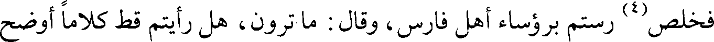
فخلص(4) رستم برؤساء أهل فارس، وقال : ما ترون، هل رأيتم قط كلاما أوضح
File: 000271.gt.txt (if the image is defective, simply delete all Arabic text and the line will be excluded)
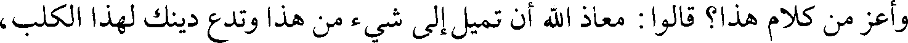
وأعز من كلام هذا؟ قالوا : معاذ الله أن تميل إلى شيء من هذا وتدع دينك لهذا الكلب،
File: 000272.gt.txt (if the image is defective, simply delete all Arabic text and the line will be excluded)
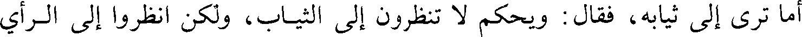
أما ترى إلى ثيابه، فقال : ويحكم لا تنظرون إلى الثياب، ولكن انظروا إلى الرأي
File: 000273.gt.txt (if the image is defective, simply delete all Arabic text and the line will be excluded)
والكلام والسيرة، إن العرب تستخف باللباس والمأكل ويصونون الأحساب.
File: 000274.gt.txt (if the image is defective, simply delete all Arabic text and the line will be excluded)
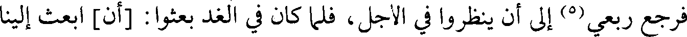
فرجع ربعي(5) إلى أن ينظروا في الأجل، فلما كان في الغد بعثوا : [أن] ابعث إلينا
File: 000275.gt.txt (if the image is defective, simply delete all Arabic text and the line will be excluded)
ذلك الرجل، فبعث إليهم سعد حذيفة بن محصن، فلما جاء الى البساط قالوا : انزل،
File: 000276.gt.txt (if the image is defective, simply delete all Arabic text and the line will be excluded)
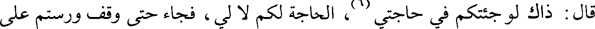
قال : ذاك لو جئتكم في حاجتي(6)، الحاجة لكم لا لي، فجاء حتى وقف ورستم على
File: 000277.gt.txt (if the image is defective, simply delete all Arabic text and the line will be excluded)
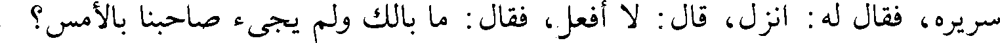
سريره، فقال له : انزل، قال : لا أفعل، فقال : ما بالك ولم يجئ صاحبنا بالأمس؟
File: 000278.gt.txt (if the image is defective, simply delete all Arabic text and the line will be excluded)
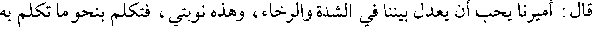
قال : أميرنا يحب أن يعدل بيننا في الشدة والرخاء، وهذه نوبتي، فتكلم بنحو ما تكلم به
File: 000279.gt.txt (if the image is defective, simply delete all Arabic text and the line will be excluded)
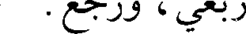
ربعي، ورجع.
File: 000280.gt.txt (if the image is defective, simply delete all Arabic text and the line will be excluded)
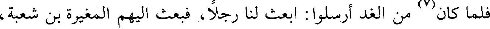
فلما كان(7) من الغد أرسلوا : ابعث لنا رجلا، فبعث اليهم المغيرة بن شعبة،
File: 000281.gt.txt (if the image is defective, simply delete all Arabic text and the line will be excluded)
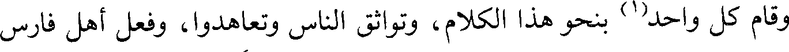
وقام كل واحد(1) بنحو هذا الكلام، وتواثق الناس وتعاهدوا، وفعل أهل فارس
File: 000282.gt.txt (if the image is defective, simply delete all Arabic text and the line will be excluded)
وقال سعد : الزموا مواقفكم، لا تحركوا شيئا حتى تصلوا الظهر، فإذا صليتم
File: 000283.gt.txt (if the image is defective, simply delete all Arabic text and the line will be excluded)
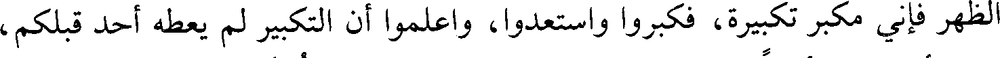
الظهر فإني مكبر تكبيرة، فكبروا واستعدوا، واعلموا أن التكبير لم يعطه أحد قبلكم،
File: 000284.gt.txt (if the image is defective, simply delete all Arabic text and the line will be excluded)
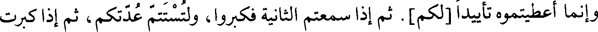
وإنما أعطيتموه تأييدا [لكم]. ثم إذا سمعتم الثانية فكبروا، ولتستتم عدتكم، ثم إذا كبرت
File: 000285.gt.txt (if the image is defective, simply delete all Arabic text and the line will be excluded)
الثالثة فكبروا، ولينشط فرسانكم الناس ليبرزوا وليطاردوا، فإذا كبرت الرابعة فارجفوا
File: 000286.gt.txt (if the image is defective, simply delete all Arabic text and the line will be excluded)
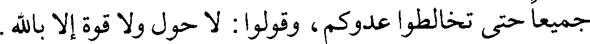
جميعا حتى تخالطوا عدوكم، وقولوا: لا حول ولا قوة إلا بالله.
File: 000287.gt.txt (if the image is defective, simply delete all Arabic text and the line will be excluded)
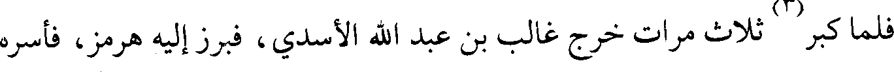
فلما كبر(2) ثلاث مرات خرج غالب بن عبد الله الأسدي، فبرز إليه هرمز، فأسره
File: 000288.gt.txt (if the image is defective, simply delete all Arabic text and the line will be excluded)
غالب، وجاء به إلى سعد، وخرج طليحة إلى عظيم منهم فقتله، وقام بنو أسد فبالغوا في
File: 000289.gt.txt (if the image is defective, simply delete all Arabic text and the line will be excluded)
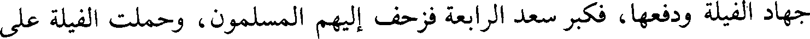
جهاد الفيلة ودفعها، فكبر سعد الرابعة فزحف إليهم المسلمون، وحملت الفيلة على
File: 000290.gt.txt (if the image is defective, simply delete all Arabic text and the line will be excluded)
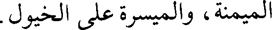
الميمنة، والميسرة على الخيول.
File: 000291.gt.txt (if the image is defective, simply delete all Arabic text and the line will be excluded)
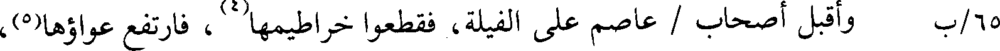
65/ب وأقبل أصحاب / عاصم على الفيلة، فقطعوا خراطيمها(4)، فارتفع عواؤها(5)،
File: 000292.gt.txt (if the image is defective, simply delete all Arabic text and the line will be excluded)
واقتتلوا حتى غربت الشمس، وحتى ذهب هدة من الليل، ثم تراجعوا، وأصيب في تلك
File: 000293.gt.txt (if the image is defective, simply delete all Arabic text and the line will be excluded)
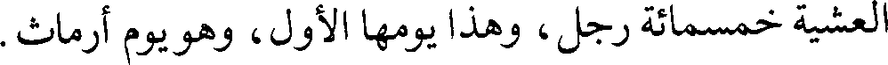
العشية خمسمائة رجل، وهذا يومها الأول، وهو يوم أرماث.
File: 000294.gt.txt (if the image is defective, simply delete all Arabic text and the line will be excluded)
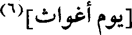
[يوم أغواث](6)
File: 000295.gt.txt (if the image is defective, simply delete all Arabic text and the line will be excluded)
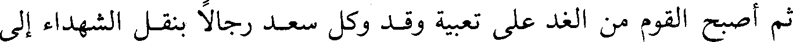
ثم أصبح القوم من الغد على تعبية وقد وكل سعد رجالا بنقل الشهداء إلى
File: 000296.gt.txt (if the image is defective, simply delete all Arabic text and the line will be excluded)
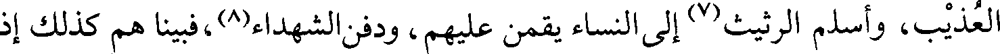
العذيب، وأسلم الرثيث(7) إلى النساء يقمن عليهم، ودفن الشهداء(8)،فبينا هم كذلك إذ
File: 000297.gt.txt (if the image is defective, simply delete all Arabic text and the line will be excluded)
197
File: 000298.gt.txt (if the image is defective, simply delete all Arabic text and the line will be excluded)
File: 000299.gt.txt (if the image is defective, simply delete all Arabic text and the line will be excluded)
جمع عمر الناس بالمدينة حتى انتهى إليه فتح القادسية ودمشق، فقال: إني كنت
To Save: `Ctrl+s`, make sure to choose `Webpage, complete`!